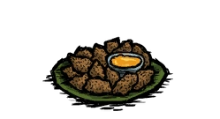

Home
Honey Nuggets

Description
Honey Nuggets is a Meat Food item, Made up of Honey. It serves as fast food, When consumed, it restores 37.5 hunger, 20 Health and 5 Sanity.
Ingredients
- Honey
- Meat
- Vegetables
- Berries
Steps
- Prepare a Crock Pot
- Add Delicious Honey
- Paste the sliced meat sticks
- Sprinkle Chopped Vegetables
- Add juice of berries
- Let it cook for 40 seconds
Recipe and Image by Don't Starve Wiki